← 返回阅读库 · 原论文目录
论文讲解阅读文档 · 内容生成 · v011
Autoregressive Image Generation using Residual Quantization[2203.01941]
视频时长 00:21:25；讲解文字 9,742 字符；提取讲解画面 44 张。按视频原顺序阅读，每段文字保留时间戳。
文字来自整段视频的自动语音转写，按自然停顿分段，并与 PPT / 论文页面 / 演示画面对齐。未将讲解压缩为摘要；术语、数字和口述公式请结合画面及原论文核对。 阅读稿已校正规范部分明确术语误识别；原始逐字稿和每处修改记录另行保留。
讲解画面为源视频截图（640×360），不是可编辑 PPT 文件。全片按每秒 2 帧扫描内容变化，逐步展开页保留；连续动画保留代表画面。清晰度受源视频限制。
下载完整资料包 · 含离线 HTML、PDF、Word、全部 PPT 画面和字幕。
原论文与材料
Autoregressive Image Generation using Residual Quantization · 下载完整 PDF（30 页）
按时间阅读
00:00:00–00:00:19 · 画面 001
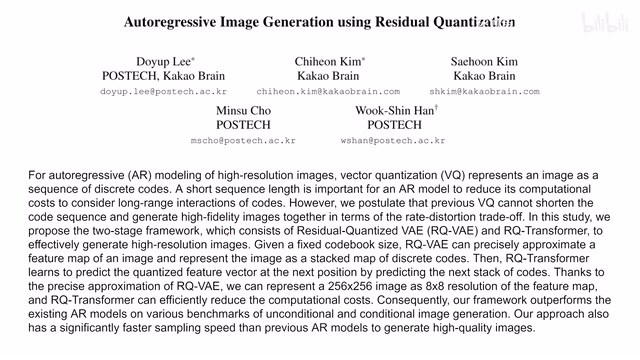
00:00:00–00:00:19 · 画面 001大家好,今天我们来快速数一篇论文 Auto-Regressive Image Generation Using Residual Quantization 这篇论文就是在我们之前 VQGAN、VQVAE 这些基础上升级了一下 VQ 的部分把 VQ 变成了 RQ 那么下面我们继续来看怎么回事首先先是一个快速的回顾 VQGAN 是什么东西它是一种两阶段的方法用来生成一个高质量的图像
00:00:19–00:02:19 · 画面 002
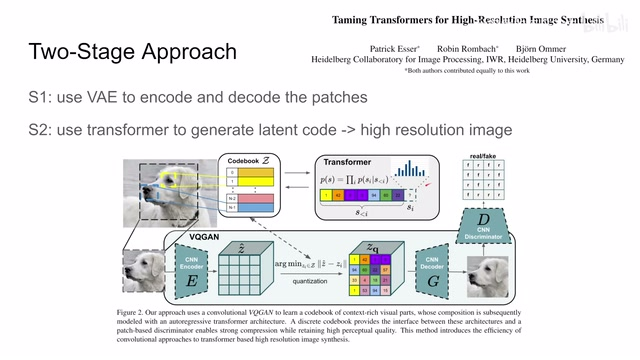
00:00:19–00:02:19 · 画面 002首先是用 VAE 把我们每个图像不同的抖昧给它编成不同的 codebookVQVAE 的这些部分我们之前都介绍过了，感兴趣的朋友或者不熟悉的朋友可以翻看我们前面的视频。那么核心来说，这个 VQVAE 跟 VAE 的具体的区别呢，就是 VAE 里面我们假设我们的这个 code 这个 latent space 它是一个混合高斯模型，因为混合高斯模型可以给我们带来很多数学上的便利，但是呢它的局限性呢也是很明显的，我们的这个 latent 的这个 representation 呢其实可能是各种各样的形状的。
你用混合高斯模型有的时候并不能非常好的去拟合它的这个形状，所以 VQ-VAE 呢是说我用离散的这个码表去表示我的这个 Latent Representation。我现在有一个有线的集合里面呢维护了很多 Embedding，那每个 Embedding 呢就是描述这个 Patch 的这个 Feature 嘛，然后呢我一张图进来过了 Encoder 之后我先得出一张原始的这个 Z Hat，然后呢在我们的这个码表里面去查找离每一个这个 Vector 最近的 Vector 是哪一个。
比如说离它最近呢是 1，就把这个 vector 里面的值嘛就填到这个地方来，那不断的这样下雪这样子呢就组成了一个新的这个 representation。它呢是根据原来这个 representation 查这个码表查出来的这个过程呢叫量化，然后呢把这个量化后的结果呢送到 decoder 里面出图像，然后后面 discriminator 什么这些东西这个就是 vqguide 这个东西了。那第二个步骤我们现在要开始生成图像。
那么生成图像呢，本质上呢就是得到一个好的这种码表，我们这个码表呢应该已经给我们足够多的零件了，我们现在要做的呢就是用这个 auto regressive 的这个方法，用这个 transformer 去把原来已知的这些 patch 拿进来去预测下一个这个地方它的这个 index 是什么东西，就这样子一个 auto regressive 的方法一遍一遍的去预测，这样子就把一整个这个 representation 给它填写出来了。
00:02:19–00:02:41 · 画面 003
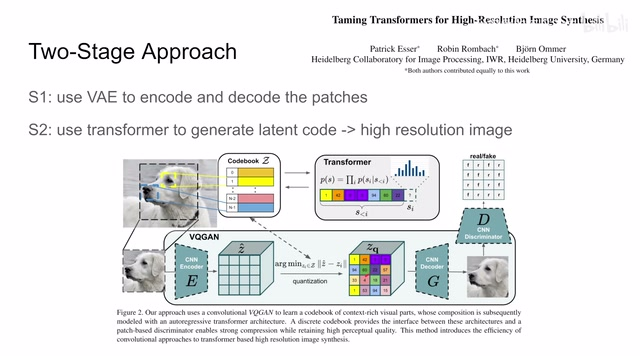
00:02:19–00:02:41 · 画面 003这个就是两步，先是训练一个码表，再就是对这个 Latent Code 它的一个预测。那么本文的核心就是改进了这个 VQVAE 这个量化的过程，同时因为我们量化过程改了，我们的 Latent Code 也改了，所以 Transformer 也要进行相应的调整。那么我们来看到这个结构整体上来说还是一样的，首先第一步也是过一个 VAE，只不过这里是变成了这个 RQVAE。
00:02:41–00:02:59 · 画面 004
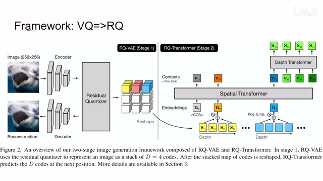
00:02:41–00:02:59 · 画面 004那么再往后呢就是这个 RQ Transformer，因为我们这里的这个 Repentition 这个 Codebook 也变掉了，那么下面呢我们就重点来看这个 RQ 的这个过程。那首先我们要回答一个问题，就是我们这里为什么需要这个 RQ，考虑到我们第二阶段的任务它是一个 Auto Regressive 的任务，那这个时候呢它就说了如果这个 Spatial Resolution 小一点的话会很有用。
00:02:59–00:04:38 · 画面 005
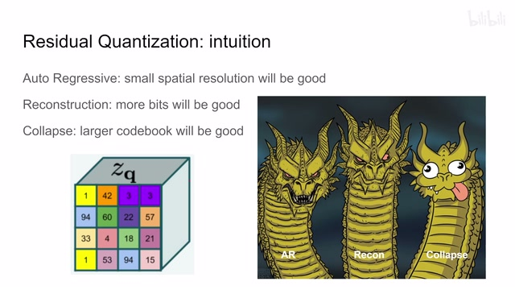
00:02:59–00:04:38 · 画面 005为什么呢，因为你的 auto regressive 是根据上一个 patch 预测下一个，预测下一个，预测下一个，这样子不断的去预测的过程，那么如果你的 special resolution 很高，那么你预测的步数呢就会增加，那这就导致了这个误差的累积等等各种一系列的问题嘛，所以呢对于 auto regressive 来说呢，他说 OK 我们希望这个 special resolution 要尽量小。
而对于这个 reconstruction 的任务来说，我们可以从信息论的角度去理解，我通过 bottleneck 的信息越多，对我们后面的重建理论上应该是越有帮助的。所以我们 Reconstruction 的要求就是希望有更多的信息，更多的 bits 给它流动过来，这就意味着在我们减少 Spatial Resolution 的同时，我们为了补偿信息的流失，我们需要增加这样一个每个 vector 它的长度或者你叫 channel 的数量或者你叫模型的宽度等等都可以，以上是这两个任务得到的要求。
那同时呢，随着这个 vector 的长度增加，你也需要更大的码表，更多的这个采样的数量去覆盖你的这个更高自由度的这么一个空间。那这种设计呢，对于这个 model collapse 它是有利的，也就是说呢，帮助我们模型更好的坍塌。哎，不过这里要停一停，这个 model collapse 它不是个好东西，auto regressive 我们想要的 reconstruction 我们想要的，而这个 model collapse 呢，它是我们希望避免的这么一个东西。那么为了调和这种矛盾呢，作者提出了这个 residual quantization。
也就是这个 RQ。那么下面我们来熟悉一下本文里面的这些符号表示。首先从 VQ 开始啊，我们训练一个 codebook，这个 codebook 叫 C，它呢是一个有限的集合，没问题。那里面的每一个这个元素的它的这个 index 我们叫它 K，它对应的 embedding 呢，我们叫这个 EK。那整个这个集合它的这个尺寸是 K，这个 capital K。然后呢，对于这个每一个 embedding 来说，它包含 NZ 个。
00:04:38–00:05:09 · 画面 006
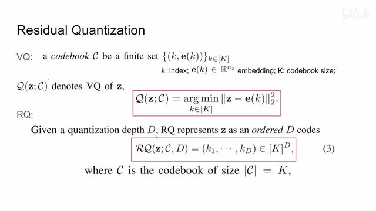
00:04:38–00:05:09 · 画面 006这个数值，也就是它是一个长度为 nz 的一个 vector。这个呢，是我们这个 vq 里面的一个表示。那么 vq 的过程呢，我们之前也说了，是拿到一个这个 encoder 出来的一个 z，我们在这个码表里面找到一个离 z 最近的这么一个 embedding，用它呢来作为我们 z 的这个量化的值。
00:05:09–00:05:11 · 画面 007
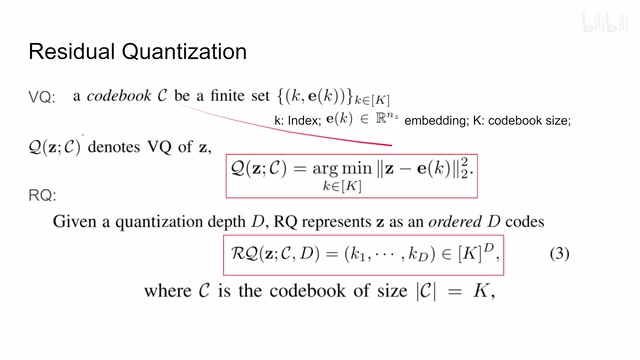
00:05:09–00:05:11 · 画面 00700:05:11–00:06:02 · 画面 008
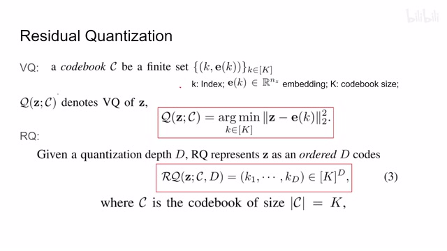
00:05:11–00:06:02 · 画面 008具体你看到这里，我们查找所有的码表，找到一个距离最小的。这里用的是 L2 distance，找到一个距离最小的，使得这个距离最小的这么一个 K，它就是我们想要的 VQ 的过程。对比之下，RQ 这里比 VQ 还多了一个深度 D。同时，我们在量化 Z 的时候，我们不止只用一个 embedding 去量化 Z，而是用第一个这种 embedding 去量化 Z。这些 embedding 它的 index 就是从 k1 到 kd，它都是来自于同样的尺寸为 k 的码表。具体怎么解，我们来看上面这部分都是刚刚这一页重复的，我直接贴过来了。
00:06:02–00:08:02 · 画面 009
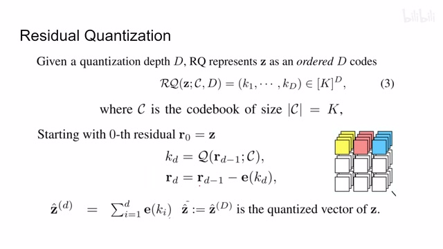
00:06:02–00:08:02 · 画面 009那下面呢，首先我们从第一个这个 residual 开始。那这里这个 RQ 的核心的思想呢，就是我先估计出一个近似的 embedding。然后呢，看这个 embedding 距离我们真实想要量化的这个值它的距离是多少。然后呢，把这个剩下的这个距离再用另一个 embedding 去表示。这样子呢，不断的去逼近我们真实的这个值。比如这里，当深度为 0 的时候，我们的这个 residual 这个剩余需要逼近的值呢，就是这个 R0，就是这个 Z。一开始我们什么都没有嘛，所以是用了 R0。然后呢，我们要开始循环做一个这个 VQ，我们根据当前的这个残差的这个值。
做一个 vq ，查找一下距离这个残差最近的这个 embeddingrepresentation 是什么。比如说他的这个 index 是这个 kd ，ok，我在这个残差当中减去这个 kd 他的这个 embedding，然后呢，得到了一个新的残差。这个残差应该是比这个残差还要小对吧。那么我再根据这个新的残差，我再去找谁能够逼近这个新的残差。这样子呢，不断的循环下去，直到循环第一次。那循环第一次以后呢，我们就拿到了第一个。
这个 index，也就相当于我们用第一个这个 vector 去描述去量化一个这个 z 的这个值。那么最终得到的结果呢，就是我们把这第一个 vector 他们求和加起来，他们这个 embedding 加起来就是我们对输入这个 vector z 它的量化。这个定义呢，就是这个样子。有了这个量化，我们就可以把它放到 Decoder 里面做重建。
因为这里我们是第一个 Vector 直接求和。所以这个 Vector 它的长度是没有变的。所以对于 Decoder 来说，它收到的东西是一样的。这个就是 RQ 的过程所以你看，对比 VQ 它是用一个 Vector 去描述一个 Z。现在我们是用第一个 Vector。比如说这里是四个 Vector 去描述这一个 Z。这样子，我们就合理的利用了更多的模型的容量。
同时让它们去分别描述不同尺度的信息。
00:08:02–00:09:17 · 画面 010
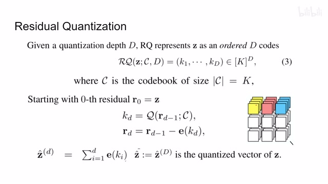
00:08:02–00:09:17 · 画面 010打个比方来说你骑个三轮车想走路路去纽约。走到村头碰见一个老大爷问大爷大爷纽约怎么走大爷，纽约这玩意谁知道。问村长去不对你看，大爷不知道纽约在哪。那怎么办你问大爷大爷美国怎么走你过了太平洋那不就是吗。对吧所以你从国内到纽约的第一步。就是先从国内到美国。你先不要管落到美国什么地方只要先跨过太平洋这是第一步那完事你就说你到了美国吧，比如说你过了白令海峡，一直走到亚特兰大，这个时候你走到一个村村口，又碰到一个大爷。那这个时候你学聪明了，你心想，这大爷他不一定知道纽约在哪儿，我先从安全的来，大爷，大爷，美国怎么走？这个可能你得用英文，但是你懂这个意思。那这个时候大爷听完你的问话，眉头紧闭，蹲在地上想了一会儿，你小子玩我是吧？这不就是美国吗？好吗？你还觉得大爷口音有点熟悉
这个时候你意识到你到了美国了，但是呢，这还不是纽约。于是呢，你就再问大爷，大爷，纽约怎么走？这个时候大爷给你指路，然后你知道啊，纽约怎么走对不对？再到纽约州，再去问，最后呢，你就到了新乡了。这个呢，就是 RQ 的原理，不断的去逼近这个残差。那然后呢，我们就把这个 RQ 这个东西放到 VE 上来用吧。这个时候呢，我们的 latent code 就变成了第一个长度 VNZ 的这么一个 vector
00:09:17–00:11:04 · 画面 011
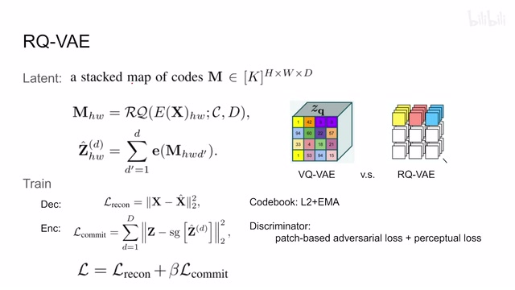
00:09:17–00:11:04 · 画面 011然后我们的 special resolution hw 对比一下我们的 vqvae，它是没有乘低的过程的。这个过程跟刚刚的 rq 也是一样的，只不过这个 z 是我们 encoder 达到输入图像来产生的。那么这个就是 rqvae。所以你可以看到，对比 vq 原来是指一个 index 描述一个 vector，现在是 4 个 index4 个 vector 去描述你 encoder 出来的一个 vector。这样子模型的表达能力也增加了那么怎么样训练网络？对于 Decoder 来说没有区别的，它拿到的还是一个长度为 NZ 的 Vector，你就是重建之后，然后做标准的 Reconstruction loss 就可以了。Decoder 没有区别。而对于我们的 Encoder 来说，在原来 VQ 里面，你只需要把我们的一个 Z 瞄准到这一个 Embedding 一个 Vector 就可以了。现在你有第一个 Embedding，那么就大家都来靠拢，那么就大家都来靠拢
把这个第一个这个深度的这个目标呢都给它加起来。那么整个这个 VAE 的训练呢就是 reconstruction loss 加这个 beta encoder 这个这个 loss 还是 follow 一个 beta VAE 的这个构造。那么当然同时呢，我们不要忘记要更新这个 codebook，它呢跟我们之前的这个 VQVAE 是一样的，就是这个 L2 加上这个 EMA 这样子平滑的让我们的这个 codebook 去 follow 我们 encoder 它输出的结果。那么这个呢就是 RQVAE 的训练
当然你如果要组成一个 GAN，你要提高图像的质量，你就后面加 discriminator。为了一个高的质量，你用 patch-based 同时加上 discriminator loss 还有 perceptual，就是用已经训练好的网络去评价你的图像的真实性等等，这些东西都是标准的操作了。然后这样子训练我们就能够得到一个好的 codebook 和一个好的 encoder。下面把我们的画笔交给 transformer，让它开始来画了。那么下面我们来看到这个 transformer
00:11:04–00:11:05 · 画面 012
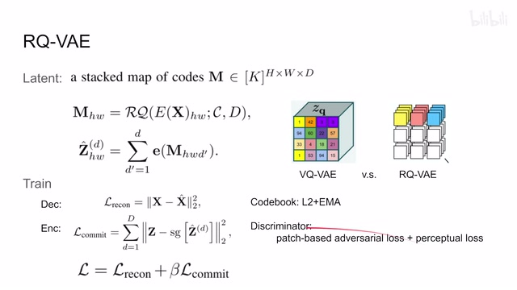
00:11:04–00:11:05 · 画面 01200:11:05–00:11:16 · 画面 013
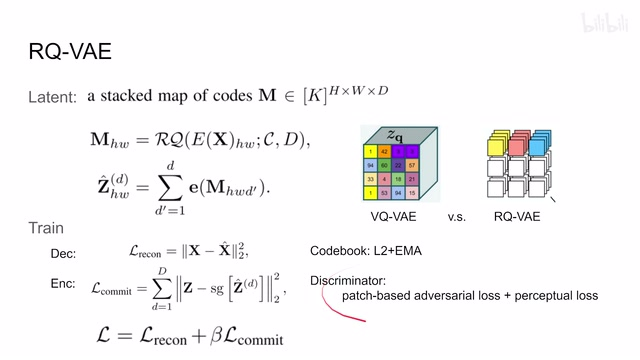
00:11:05–00:11:16 · 画面 01300:11:16–00:12:17 · 画面 014
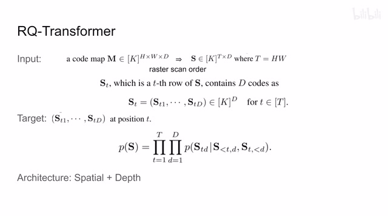
00:11:16–00:12:17 · 画面 014因为我们之前的 vq 呢是只有一个 hw，所以呢我们可以直接把这个 hw 这些 token 呢展开送到一个标准的 transformer 里面，这样就结束了。但是呢现在我们变成 hw 乘 d 这样子，如果我们直接把它展开，我们就并不能利用这第一个 token 他们之间很强的这个相关性，同时呢也会大幅增加我们的计算负担因此呢，这里呢作者把它进行了一个展开，是指在这个 spatial location 上进行了一个展开。这样子呢，我们的 token 就变成了一个 t 乘 d 的，其中 t 呢是 h 乘 w。那么这个展开的过程呢就是标准的这个 auto regressive 的方法，就是第一行，然后接着第二行，接着第三行这样的展开的形式。那么然后对于这个 t 乘 d 的这么一个 tensor 来说呢，它的每一行就代表着一个 spatial location 上的位置
然后这一行中的每一列呢就是不同的深度比如说这是低层的深度一直到低层的深度这个 t 呢表示它在空间中的一个位置这个东西呢就是我们的这个 transformer 它需要的输入那么我们的 transformer 需要给定什么呢我们既然是做这个 auto regressive 那么它就是基于前面的这个 latent representation 前面的这些 code 来预测之后的这个 code 是什么样子你可以看到它依赖的变量包括
00:12:17–00:12:18 · 画面 015
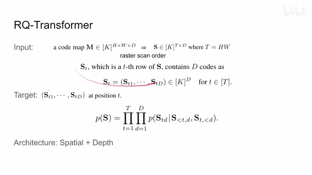
00:12:17–00:12:18 · 画面 01500:12:18–00:13:27 · 画面 016
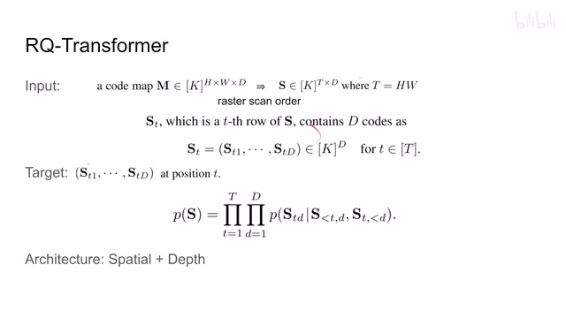
00:12:18–00:13:27 · 画面 016同一个深度下面当前这个 token 位置之前的所有的这些 token 和这个同一个 spatial location 上面然后当前这个深度之前的所有的这些 token 它是依赖这两种东西那本质上它还是一个 auto regressive 只不过是我们增加了这个深度这个 d 这个尺度所以呢它的表达会略显复杂但是本质上当你预测一个位置是 td 的这么一个 embedding 的时候你依赖于在这个空间位置上比它靠前的所有的这些 embedding 同时呢在深度上比这个深度还浅的所有的这个 embedding 那么当然为了做这样的预测呢还是因为我们之前说了我们的 token 数量加上成了 D 之后会变得非常多我们不能直接把它放到一个大的 transformer 里面来处理那这里呢作者就提出了这个 spatial transformer 和这个 depth transformer 两种 transformer 相结合的这么一个构型这个呢就是 RQ transformer
00:13:27–00:13:28 · 画面 017
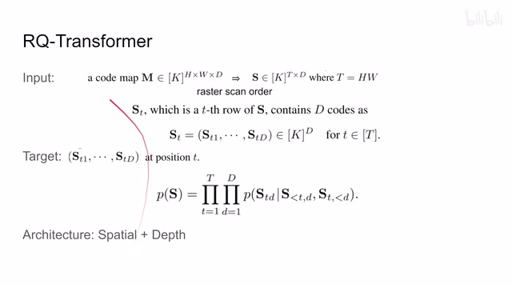
00:13:27–00:13:28 · 画面 01700:13:28–00:13:30 · 画面 018
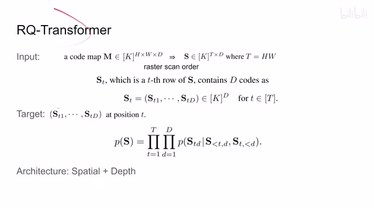
00:13:28–00:13:30 · 画面 018那么我们具体来看，首先这个两个 transformer，因为它们都是 auto regressive 的方法，所以我们当前的 token 只依赖于这个 token 时间空间之前的这个 token，它不能和我们这个 token 之后的这些 token 产生 attention。所以呢，我们的 attention 这里用的是这个 mask 的 attention。那具体来看，它的输入首先呢是先过这个 spatial transformer、spatial transformer 的 token 呢，它包括这个 positional embedding，这个 t 呢表示不同的这个空间上的位置嘛。
00:13:30–00:14:39 · 画面 019
00:13:30–00:14:39 · 画面 019然后呢你可以看到这里把不同的深度的所有的这个 embedding 给它加起来了那么这个球盒里面整个的这一项你可以看到它沿着不同深度加起来它其实就是我们在 T-1 时刻对 Z 的就是对这个图像中提取出来的 embedding 的这个量化的结果那看到这里比如说我们有四层的深度对吧我就是这个 t 等于 1 的时候对吧把所有的 t 等于 1 的这个 token 加起来然后加上 position embedding 它呢就变成了这个 u2 那么 u3 呢就是从 s21 加到 s24 这样子呢以此类推那么在故事的最开始呢这个 u1 呢它就是这个整个这个 sequence 的这个 start 嘛它呢是一个这个 learnable embedding 也就是可供训练的这么一个参数
00:14:39–00:14:40 · 画面 020
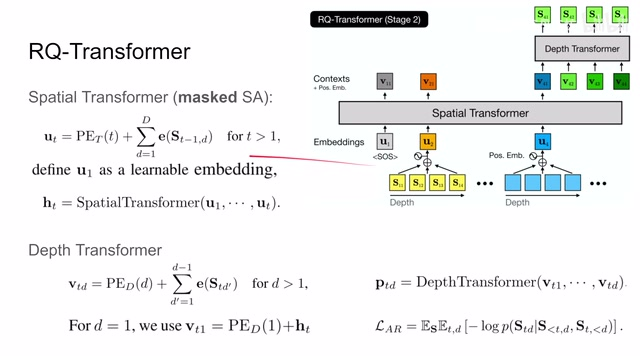
00:14:39–00:14:40 · 画面 02000:14:40–00:14:45 · 画面 021
00:14:40–00:14:45 · 画面 021它呢标记着我们这个序列的开始就是所有我们的预测都从它来开始然后呢不断的生成后面的这些 token 那么我们的 spatial transformer 做的什么事情呢就是把这些所有的 u 然后呢生成一个 ht 就是对最后一个 token 它生成一个 ht 那么它就是一个中间的变量嘛交给我们后面的下一个 transformer 来处理那这个呢是这个 spatial transformer 它本质上就是在不同的位置上把我们所有的深度的
00:14:45–00:14:46 · 画面 022
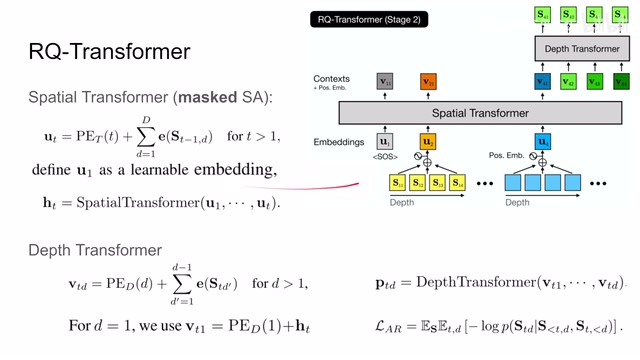
00:14:45–00:14:46 · 画面 02200:14:46–00:14:56 · 画面 023
00:14:46–00:14:56 · 画面 02300:14:56–00:14:57 · 画面 024
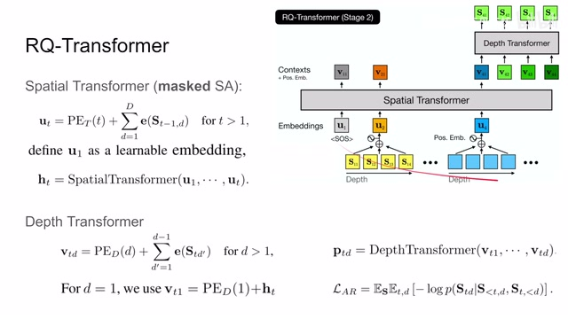
00:14:56–00:14:57 · 画面 02400:14:57–00:15:18 · 画面 025
00:14:57–00:15:18 · 画面 025这些 embedding 给它集合起来然后呢综合当前这个位置之前的所有的这些 token 预测一下当前这个位置上它的这个 representation 这个 embedding 那么有了这个 ht 之后呢我们要继续往下走要把所有的当前位置上的这个深度再给它用起来这个呢就是这个 depth transformer
00:15:18–00:15:20 · 画面 026
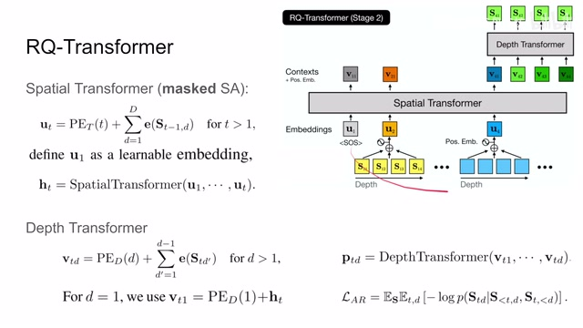
00:15:18–00:15:20 · 画面 02600:15:20–00:15:27 · 画面 027
00:15:20–00:15:27 · 画面 02700:15:27–00:15:28 · 画面 028
00:15:27–00:15:28 · 画面 02800:15:28–00:15:34 · 画面 029
00:15:28–00:15:34 · 画面 02900:15:34–00:15:35 · 画面 030
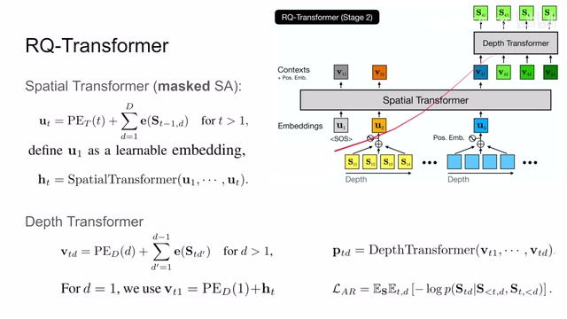
00:15:34–00:15:35 · 画面 030那么 Depth Transformer 它的输入是当前位置 T 上所有不同深度的确切来说是你要预测的深度的之前的所有的 Token 那么 V 具体是怎么计算的首先是一个 Positional Embedding 在之后就是比如说你预测 T 位置上的 Token 我们就把当前 T 位置上的之前的所有的深度它的 Embedding 加起来
00:15:35–00:17:06 · 画面 031
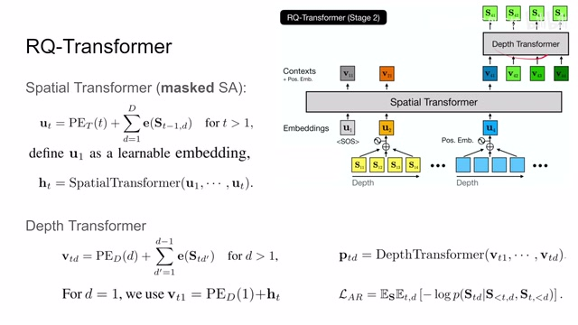
00:15:35–00:17:06 · 画面 031它呢就是这个 VTD 而对于第一层这个深度来说呢因为没有比第一层再往前的这些 token 了所以呢这里呢就直接拿的是这个 HT 就是这个 spatial transformer 它的预测的结果拿到了这里这样子呢所有的 VTD 它就能够表示出来了所以你可以看到呢整个这个模型的预测的逻辑呢假如说我要预测第 T 个位置上它的这个值是多少那首先我先把这个 T 这个位置之前的所有的这些 embedding 给它集合起来来给出一个当前位置上的 ht 的预测 ht 相当于 t 位置上的最浅的一层最粗的一层也就是第一层的 embedding 那么有了第一层的 embedding 之后我还需要预测不同的深度那么怎么办就是把我们当前深度之前的所有深度在 t 位置上的 embedding 给它加起来这个就是 vtd
最后再过 Depth Transformer 它的输出就是对应 T 位置上这里是 T 等于 4 那么不同深度的第一个深度 第二个深度一直到第四个深度它的输出这个就是 RQ Transformer
00:17:06–00:17:07 · 画面 032
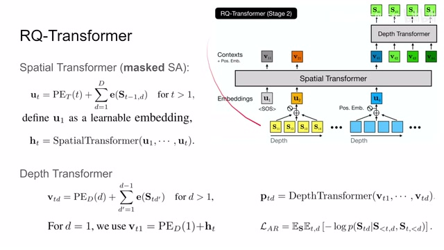
00:17:06–00:17:07 · 画面 03200:17:07–00:17:28 · 画面 033
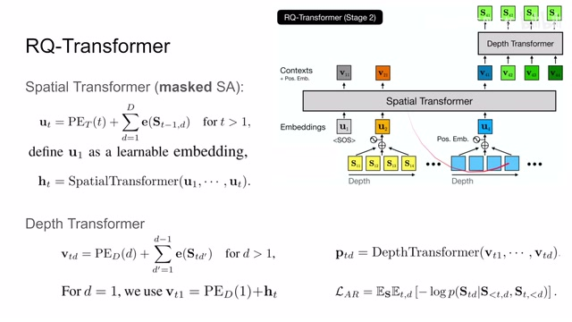
00:17:07–00:17:28 · 画面 033原来我们的 auto regressive 只发生在这个 special dimension 因为我们的每个空间尺度上只有一个 token 那现在呢我们首先要在这个空间尺度上发生然后呢还要在这个深度上来发生因为我们每一个空间位置上现在有第一个这个 token 第一个 embedding 所以我们在深度尺度上也要做一个 auto regressive 这个呢就是 depth transformer
00:17:28–00:17:37 · 画面 034
00:17:28–00:17:37 · 画面 034那这样子出来之后呢我们就开始训练吧 loss 呢就是直接的因为我们是预测的离散的这个码表所以呢就直接用这个 native log likelihood 也就是 cross entropy 来做就可以了那么这个呢是这个 RQ transformer 它的这个运行的基本原理那么当然因为我们这个是 auto regressive 的任务它的误差呢是不断累积的那为了解决这个问题呢作者提出用这个 soft labeling 还有这个 statistic sampling 用它们来解决我们预测的误差累积的问题
00:17:37–00:17:40 · 画面 035
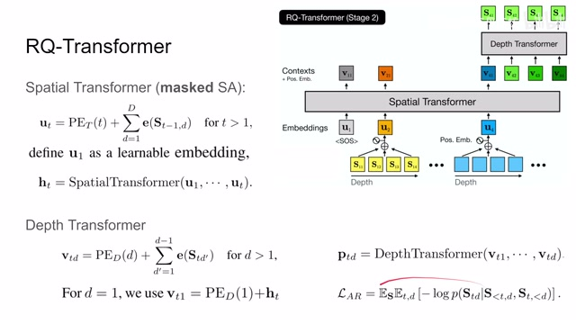
00:17:37–00:17:40 · 画面 03500:17:40–00:17:42 · 画面 036
00:17:40–00:17:42 · 画面 03600:17:42–00:17:51 · 画面 037
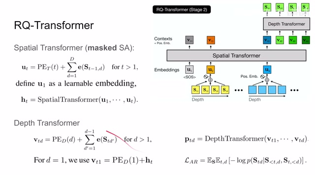
00:17:42–00:17:51 · 画面 03700:17:51–00:19:44 · 画面 038
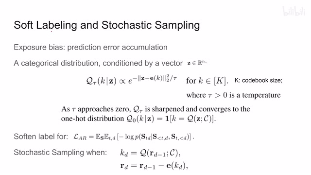
00:17:51–00:19:44 · 画面 038那么这两个技巧呢它们都基于同一个前置条件就是这里作者定义了一个这个离散的分布这个分布呢它是这个条件分布那条件呢就是一个 latent representation 一个 embedding 这个长度为 nz 的这么一个 vector 那么这个离散的 distribution 有多少类呢我们的 codebook 有多大那么它就有多少个分类这里比如说 capital k 这么一个分类那么这个 distribution 呢它呢跟这个函数正相关那这个函数什么意思呢你可以把它理解为这是一个高斯核那么这个分布的值呢取决于这个 condition 这个 z 和我们当前的这个 embedding 它的这个距离的大小也就是说我们这 condition 这个 z 和我们当前的 embedding 越靠近越相像那么这个分布的值就越高那这里呢我们还有一个这个 tau 它作为一个 temperature 来控制整个这个分布的形状
当我们这个套逐渐接近 0 的时候我们整个这个分布就会越来越犀利越来越锐利大部分的概率都会集中在只有这个 Z 等于这个 1K 的这种情况下就像他说的收敛到成了这个 1 号 distribution 一样那么这个 distribution 的作用就相当于我现在的这个 Z 它在我们的码表中找到一个离它最相似的这么一个 embedding你不必是一定局限于和自己最相似的那个 embedding 你也有一定概率呢找到和他差不多可能是第二第三相似的这么一个 embedding 或者是其他的任何 embedding 这看你的这个套的这个控制的程度那么有了这种 distribution 呢第一个能做的事情就像我刚刚说的一样你在训练时给定的这个 label 不一定严格就是离当前这个 z 最近的这个 embedding 它有可能是其他的 embedding
00:19:44–00:19:45 · 画面 039
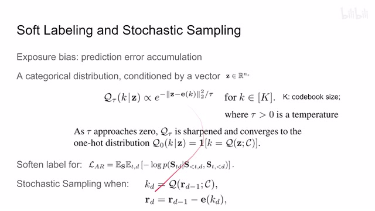
00:19:44–00:19:45 · 画面 039所以 cross entropy loss 它不再是一个 1 号 encoding 的一个 label 它是直接用 distribution 作为 label 来训练 loss 这个就是 soft labelsoft labeling 这是第一个应用那么第二个应用就是随机采样具体来说就是我们在处理 RQ 扣的时候来找到离 rd-1 最近的 kd 这是我们 RQ 的方法一般来说我们按照 VQ 来做的话
00:19:45–00:20:41 · 画面 040
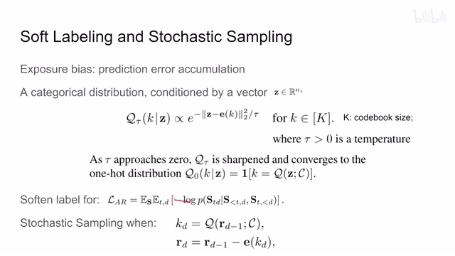
00:19:45–00:20:41 · 画面 040这个过程只会返回给我们离 rd-1 最近的这么一个 embedding 它叫 kd 然后在这里呢作者说我同样的应用这个 distribution 我按照这个 distribution 去抽样所以它有很大的概率去返回离这个 rd-1 最近的这个 kd 那同时它有概率去返回离它第二进第三进等等等等其他的这些 label 其他的这些 embedding 其他的这些 index 那这样子呢你也可以把它理解成为一种 data augmentation那么这个呢就是作者介绍的为了训练这个 RQTransformer 的一个 trick 那到这里呢以上就是本文的主要的技术细节那么下面呢我们来看到这个例子这里呢就展示了这个 RQVAE 如何由粗到细的逐渐去 reconstruct 整个这个图像那么你看如果我们只用第一层的这个深度它大概重建出了一个大概然后呢随着这个 invading 的深度逐渐增加那么我们重建的效果呢也是越来越好
00:20:41–00:20:46 · 画面 041
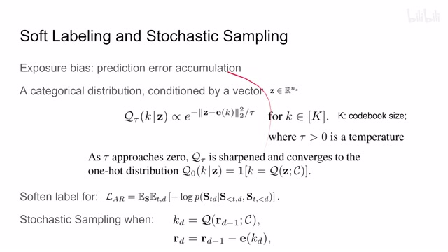
00:20:41–00:20:46 · 画面 04100:20:46–00:20:49 · 画面 042
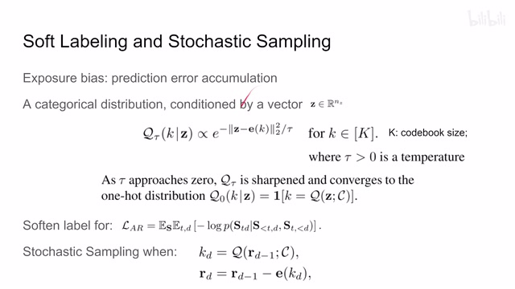
00:20:46–00:20:49 · 画面 04200:20:49–00:21:25 · 画面 043
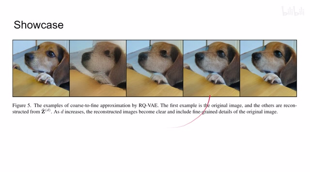
00:20:49–00:21:25 · 画面 043这个是作者的一个展示那么在论文中当然作者汇报了大量的实验结果还有它的样例的图像那么还有跟之前方法的对比感兴趣的朋友可以到原文查看好的以上就是我对这个文章的一个大概的一个整理那么感谢您的收看再见
00:21:25–00:21:25 · 画面 044
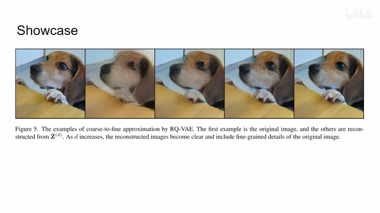
00:21:25–00:21:25 · 画面 044转写与来源说明 · 0 个自动复核提示
保留 80 个原始语音片段，0 个片段触发自动复核提示。提示仅用于定位可能的术语、重复或识别问题，不等于已确认错误。
讲解画面为源视频截图（640×360），不是可编辑 PPT 文件。全片按每秒 2 帧扫描内容变化，逐步展开页保留；连续动画保留代表画面。清晰度受源视频限制。
原视频：paper/合集_2026-10-16_内容生成/[论文速览]Autoregressive Image Generation using Residual Quantization[2203.01941].mp4
SHA-256：3a4a3e1e61d28536cd5452d32ac2b7424d6a8c2dad34904cb75757c0fb6edda5
全文按视频语音与画面制作。原论文可从上方链接下载；完整资料包保留全文、原始逐字稿、字幕和校对记录。